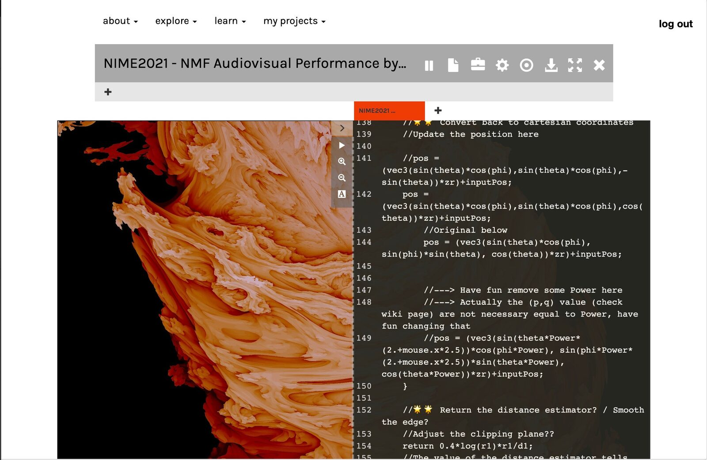
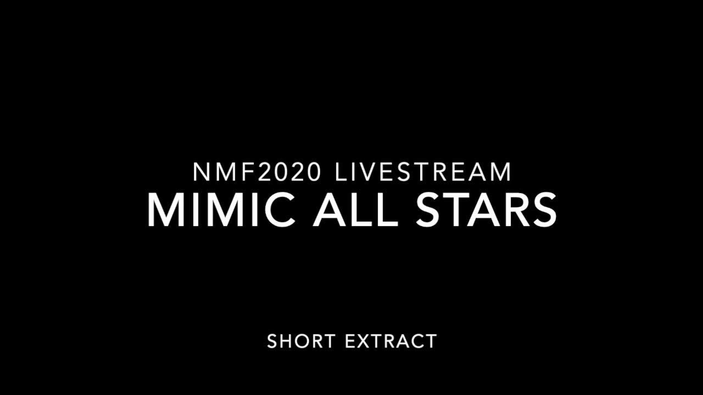

Executive Order
PROJECT DESCRIPTION
Live coding performances are often available live from remote locations, with the sound and audio of the performers laptop streamed to viewers across the web. This can be from live venues, or in more recent cases due to Covid-19, from performers’ houses or studios.
In this work, we will conduct a three person, networked audiovisual live coding performance using a new platform that provides the freedom to execute code on each other’s computers simultaneously and remotely over the internet without interrupting the flow of musical performance for any performer or audience. Our approach is fundamentally different from most other networked live coding performances because we automatically, iteratively and remotely execute code on each other’s computers in real-time using online networked technologies via the operational transformation (C. A. Ellis and S. J. Gibbs. 1989. Concurrency control in groupware systems. SIGMOD Rec. 18, 2 (June 1989), 399–407. DOI:https://doi.org/10.1145/66926.66963). Whilst most aspects of the performance will remain consistent, there are a number of interesting outcomes caused by this approach to code execution that our performance will look to explore and exploit. By simultaneously streaming the three different streams, we will make clear to the audience how different code interactions are impacting on the audiovisual outcome. Although all three authors will perform simultaneously, none of their code can be considered an authoritative representation of the work currently being experienced by the audience, and the notion of executive control is continuously called into question.
Stochasticity and chance has been used in generative music for centuries. Whilst initially using analogue methods such as dice or the I Ching, computer based generative music often relies on the selection of values from stochastic distributions. Depending on how these values are generated e.g. via machine learning processes, or simply calling Math.random() in JavaScript, each output is most often unique to the device it is being executed on, having significant differences for the musical experience of each observer. This exponentially builds as any observer’s local state gradually drifts from that of any other, creating a performance that could only exist in such a form, in a world where remote viewing and dislocated performance is becoming the norm.
Any form of remote musical collaboration has its challenges and collaborative live coding does not differ. We feel the static or slow moving form of live coding performances are sometimes to their detriment and in this respect we aim to use our 3 performers as an advantage, rather than a hindrance.
The performance will follow the roles of two performers working on current output at any one time, whilst the third develops subsequent sections to maintain forward motion. Each performer will aim to use shared global stochastic distributions to control macro level aspects of the composition, amplifying the effect of, for example, distinctly seeded pseudo random processes, whilst attempting to maintain a coherent musical performance.
PROGRAM NOTES
In this work, we will explore the idea of divergent realities as they manifest for three performers and an audience during a live performance. We will use a collaborative live-coding environment that we have developed to carry out the performance. The live-coding environment combines collaborative editing of source code with live execution of code. We separate editing and execution so the performers can choose when to execute fragments of the document on their own and the other performers' machines.
As the performance progresses, the performers will code various non-deterministic processes, for example, probabilistic frequency sequences and signal processors. The stochastic behaviour of the growing, collaboratively written program means each performer will hear an increasingly divergent interpretation of the piece. There will be no definitive sonic interpretation of the code. We will make each of the performers' divergent live streams available in performance so the audience can choose to which they wish to listen.
PERFORMANCE REQUIREMENTS
equipment: We will livestream our performance via Open Broadcast Software (OBS (https://obsproject.com)). This is a common contemporary means to livestream networked events, including for live music performances with screen-sharing. It includes integrations for popular live streaming platforms such as Twitch and YouTube, and we have successfully used it before for such purposes at other Music events. The three performers will stream their own screenshares and live cameras / audio via Zoom to a central device running OBS, which will then provide a mixed stream to whichever platform NIME prefers. Furthermore, individual audio streams will also be available via separate OBS streams from pre-mixed devices.
space: The proposed performance can adapt to any space or circumstance as long as each performer can access to the internet, and as long as audience members can view an internet Livestream.
performers: There are three performers and each will provide their own equipment
feasibility: The technology platform required for the proposed performance was created by the performers as part of a large-scale, funded research project that currently supports online programmes with approx. 60,000 users. A version of this specific performance featured as part of the Network Music Festival in June 2020 and was a success.
MEDIA
1 high-resolution image in .jpg format (attached)

A screenshot of the live coding interface that all performers will stream, including an example of real-time audiovisuals.
1 video documentation of the performance in .mp4 format (attached)

▶An excerpt from a prior performance at the Network Music Festival 2020. The performer’s audio chat is included for illustrative purposes. In the recording, each performer is executing code on each others machines, and a discussion can be heard relating to real-time debugging. Specifically one of the performers is blamed for incorrectly defined their function and this causes a momentary glitch in the audio out, which then returns a fraction of a second later, still in time and at tempo due to the clock mechanisms designed as part of the live coding process. Blame is of course, disputed.

ACKNOWLEDGEMENTS
This work is supported by the UK Arts and Humanities Research Council.